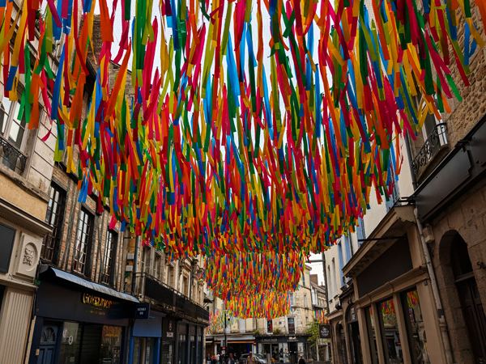

Sunday 1st June We left Kingsclere at 5:45 and had a drive of about an hour to get to the ferry port in Portsmouth. We were on the ferry by about 7:45 and found somewhere to sit for the six hour crossing to Caen. The ferry was not too full so we were able to it quite a large area to ourselves which was all reasonably comfortable. We left Portsmouth about 25 minutes late at 8:25.
The six hour journey went remarkably quickly. We had breakfast after boarding, I managed to get about an hours sleep. We had more food at 1ish (UK time) and arrived in Caen on time at exactly 3pm (French time). It took about 20 minutes to get off the ferry and another 30 minutes to get through immigration but by 3:45, we were on our way out of the port.
We had chosen to stay in Alençon tonight. This was not for any particular reason other than it was about 90 minutes from Caen in the direction we want to be heading and has an Ibis hotel in the centre. It was an easy drive down and we had checked into the hotel by 5:15. After showers, we went out for the evening.

Alençon is twinned with Basingstoke so we did not have high expectations for the place. However, it was a pleasant enough town to wander round with a cathedral and a few other nice buildings. We walked out to the river where there was a craft beer bar that looked good but this was closed. We went back instead to Au Bureau, a sports bar that we had seen just after leaving the hotel.
Here there was a happy hour until 8pm with all the beers at €5 for half a litre, including a couple of strong Belgian ones. We had a few rounds in there and also had very good meals. We were back in the hotel by 9:15. We went to the bar for our welcome drink nad had a relatively early night.
Monday 2nd June